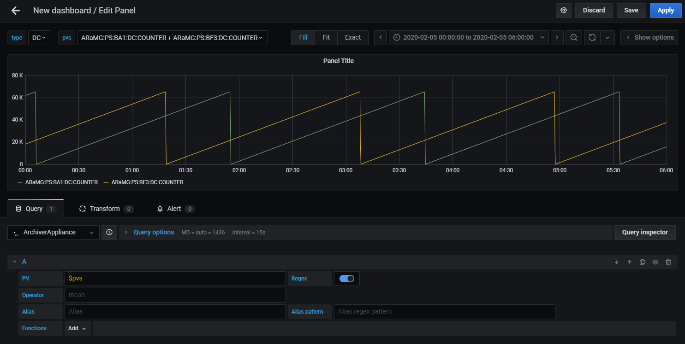

Variables
Variable is Grafana feature to create interactive and dynamic dashboards also known as Templating. Refer Grafana Documentation for more information.
This plugin supports to use PV names registered in Archiver Appliance for variables.
Adding a Variable
You can add a variable by following steps.
Open
Dashboard settingsfrom top header.Select
Variablesfrom side menu.Click
Add variable.Configure variable settings. Refer Variable Settings
Click
Add.
Variable Settings
Query format is explained in this documentation. See Grafana Documentation for other settings.

You can use regular expression pattern same as Query Edit. Only wildcard pattern and alternation pattern are available.
You can also use another variable as a part of query. For example, you have variable group, which is a list of PV name prefixes according to PV naming rules on your institute.
Below is a query in this case.
${group}:.*
Note
Default maximum number of PV names you can use in variables is 100.
Limit parameter is available to change maxmum number. Parameters must be follow ? character.
PV:NAME:.*?limit=1000
Variables Usage
Variables is allowed to use in each field and Functions parameter except for alias pattern field.
You can select multiple PVs from drop down menu with variables.
